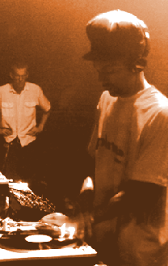

|
C
O N _ V E R S A T I O N S
dego, part 1 (1994)
dego, part 2 (1994)
carl craig (1994)
jeff mills (1995)
dan bell (1994)
T
H I N K
tracing the histories of electronic
and experimental music
S A I D & D I D
an online archive featuring
historical documents on electronic
and experimental music history
|

DEGO
[Cleveland, OH]
e-when
we talked before (in Cleveland, along with Charles Noel/Monochrome
and Stephen Hindman/KingSize), Charles and I were trying to explain
how we thought "Journey From the Light" and "Internal Affairs"
were like watersheds...or turning points or something like that.
I would also count "Golden Age."
d-yeah yeah.
e-how true is this? Would you say those are the peaks?
d-for those in the know that's true. But for the average...and
I mean "for those in the know" I'm talking like, a very small
amount of people. Even big-name people you might think that'd
be in the know aren't in the know. People don't understand that.
e-we came upon this realization purely by the way they sounded.
They seemed like "manifestos" of some kind...just like: "Here
it is. This is IT."
d-yah I know, it's like...I'll tell you what a lot of people say...stuff
like that, it's like us making the manual...you get wot I'm sayin?
And then everybody else reads it, and makes their crap from it.
e-ha ha ha!!! So, I bet you feel kind of bitter about the fact
that people--
d-no. Cuz I know I was the first. So that's that. (laughs, talks
aside) I was the FIRST, Wink...don't you ever forget that! (laughs)
e-ha ha...for a while there you seemed kind of bitter--
d-no, no...as long as some people understand, that's all, know
wot I mean? Ain't gonna beat your head in on concrete trying to
show people what really is...and you can't tell people what's
good and what ain't good. It's meant to be a matter of taste,
but I know what I know, and certain people out there know what
they know, and that's it.
e-would you say there's a watershed this year (1994) that we
don't know about? On the way, or that's already come out...or
a "manual," as you would put it...
d-there's one thing that Goldie's done that's something different
again. And then there's us using live instruments and shit.
e-how about anything that's come out already this year? Like
a high point...like the album ("Parallel Universe")...
d-that could be, because we use a lot of live instruments on that,
so I'm talking about that, yeah.
e-what songs use live instruments on that?
d-"Sunspots" and "Universal Love."
e-well that's obvious...heh, the saxophone. Along those lines,
where do you think Reinforced is going in the future? Same direction?
d-I dunno. We'll always do things to satisfy the, you know...the
masses out there, you get wot I'm saying? If you hear the [first]
Cold Mission, we got us using some live trumpet player and all
that shit, and playing keyboards and live and all that shit, right?
e-so it's coming full circle--
d-on the other side you got all the normal run-of-the-mill stuff
as well.
e-so you're pretty much improvising...as you go along.
d-yeah yeah.
e-so the crowd is important to you, then? The "masses."
d-yeah, we gotta sell the records still, ain't we? Still a business.
It's not like I'm sitting down on some big deal and we can get
all artsy-fartsy about it...if I could do that, then bloody hell
yes...there'd be a lot of things I want to do still, but such
is. Still got to sell records. You do something really different
and shit, the attitude of a lot of people, they ain't got no open
mind. They're like, "Urowww, I don't understand what's going on."
Know wot I mean?
e-yeah.
d-if it ain't...I dunno, I can't explain. Them people just don't...
e-my town (Columbus, Ohio) is still stuck still stuck in guitar/drum/bass
whatever...
d-wot? Drum & bass?
e-no, REAL drum & bass. (laughs) Guitar crap bands.
d-bands?
e-yeah...and hip-hop. They can't even accept electronic music
whatsoever.
d-yeah? Well, such is. Like Wink said, "Open Your Miiiind." (laughs)
"Take people on a journey."
e-he he he.
d-no, but it's true, tho...know wot I mean? People should open
their minds. The way people will hear a record and say "uuuuuwww"
coz it ain't up to the normal formula, it's just slightly different:
"Uwww, I don't want to know." Oh yeah--see them 4 Hero remixes...you
know the house remixes and all of that?
e-yeah...
d-they never came out, you know that. We didn't release them [in
the UK]. Why? Because people are like, "Why dey doin' house? Uuuow,
I don't like house."
e-ha ha ha ha...
d-d'you understand? When I did them Tek-9 hip-hop tracks, right?
Sometimes it's a waste of time, I dunno why I bother. I do 'em
for myself, know wot I mean? "Why'd he put hip-hop on there?"
Cuz they just listen to "hardcore," goin' 160 bpm's, night and
day.
e-ha ha ha!
d-they're just fuckin'...dumbos, you understand?
e-so you got a bad reaction when you had that "Points Proven"
stuff...
d-when I do the things with the hip-hop on there, and you do things
like house mixes, which we've been doing from a long time ago,
you get a bad reaction! Or you get people saying, "Oh, they think
they can make house." You get some guy who reviews records saying
"Oh, now they're jumping on the bandwagon," when from _Rivet 1205_
we had a house bloody track on it...so how can we be jumping on
the bandwagon when in 1990 we had a house cut...had a house _label_
out since then as well.
e-oh yeah? What was the name of that?
d-Partners, Inc.
e-wow, that's news to me. Shit.
d-but you know wot I mean? That's what I'm saying. We just do
them fings to say "We were the first, we done that, yeah right
right." And we'll just move on. But someone else does that kind
of thing and they go "yeah yeah yeah," coz they expect it of Reinforced.
Like say someone does the same thing that's like you done, they
don't expect that person to be that good or whatever, they go
bloody mad about it. Serious, man.
e-yeah i think variety is necessary. Like you say, if you're
just somebody who sits and listens to hardcore (drum'n'bass) day
and night, what kind of person are you?
d-dunno...they're just weirdos.
e-he he he.
d-I'm amazed when I hear people talking about things like "Golden
Age" and "Students of the Future" and all that over here (the
US). Because them idiots don't understand...
e-well I think "Golden Age" is one of the most amazing things
I've ever heard...
d-see?
e-becasue it totally breaks shit down...
d-mm-hm.
e-I mean if I wasn't convinced already [about the artistic
merit of drum'n'bass], that record changed my mind entirely.
d-oh yeah, see? I wish every release could be like that.
e-so that's the kind of thing you would like to do.
d-I'd like it to be like that...
e-"Wrinkles in Time" [from "Parallel Universe"] kinda
fits in that category... So, in general then...looking at this
objectively, how do you see [drum'n'bass]...do you think it's
changing music at all, is it opening up new doors, or--
d-all it's done is open up a crowd that should have been opened
up to from the beginning anyway: the reggae crowd. They're really
involved with it. At the moment, in England, they are...
e-well how about in terms of the history of music, in a more
general sense...
d-how's it going to carry on?
e-yeah, well...do you see it as an important moment in music
history, possibly?
d-uuuuuh, no.
e-not along the lines of Bebop, or--
d-nah nah nah, no way!
e-no?
d-no, no. Nothing like that.
e-hm. Because in a way...
d-we are babies from techno...if anything, you can say that about
it.
e-well on the other hand, if you think of it in terms of the
unlimited potential of sampling, cutting up the beats and all
that...it becomes almost like improvisation.
d-yah, that's true...but--
e-I think that has long-ranging implications that people haven't
really soaked in yet.
d-potentially, it could...
e-like "Golden Age"...my intention here is to call attention
to the fact that "Golden Age" is one of the most amazing things
that's come out, and that 50 years from now I'd like people to
remember that record.
d-nah, they won't, mate. The hardcore people can't remember what
came out a month ago, how'd you expect anyone to remember that
shit? (chuckles) Know wot I mean? Records have a very short existence
in this music.
e-how do you feel about that?
d-DJs are arseholes, really...
e-the disposability factor...
d-can't sit on a track for ages...there's some DJs that do, but
you know...what's that mean?
e-so that's just a function of the scene...
d-yeah.
e-do you think that's good or bad? Do you want your stuff to
last?
d-some fings, yes...some particular things, yes...some no (laughs).
e-because I think one thing techno's done is force people to
let go of notions of idolatry...
d-yeah.
e-because everything moves so fast, you can barely grab on
to anything...but I dunno if that's good or bad yet.
d-I dunno.
e-how do you feel about this "jungle hoopla," as far as the
British media.
d-aanh, it's just them finding out we're still alive. That's all.
"Don't believe the hype," and that's it. You get a lot of people
in the scene believing it, people who are already involved in
it...goin' on like...but their record sales ain't increased, so
what the hell are they fuckin' jumpin' up and down about?
e-Danny Breaks said something along the lines that when "Smart-e's"
came out and all that crap, people in the mainstream and non-hardcore
heads basically rejected hardcore...which was good because only
the people who cared stuck around...is that true?
d-yeah but I don't think much of the people that "care"...who
stuck around. Arright, just because it's "underground" don't mean
hardcore ain't got a pop scene still. And i'm not even talking
nuttin' like "Smart-E's" and stuff...we've had our piano tracks
as well...that crossed over. We've all done that...drum &
bass, everybody, we've all had our big tracks that were big poppy
kind of crossovers. I'm talking about now, still in the underground.
There's still a pop kind of thing. There's certain things that
will appeal more than others. Like, you put a reggae hook in it,
an shit, people jump up and down like they've gone bonkers! That
pop mentality is still there...it's not like the techno scene.
That's why I like about the techno scene when I come here (the
US)...I don't know many people in the techno scene in England,
so when I come here, when I see these DJs and people like Josh
[Wink] and everyone...they listen to all different kinds of techno,
and then they build up their set out of the whole different array
of stuff...
e-especially Josh...
d-yeah, you see? you get wot I'm sayin'?
e-speaking of jungle...I found out some interesting stuff about
the fact that they used to call Duke Ellington's hot jazz in the
1920s "jungle."
d-yeah...my friend's got some of that stuff, I know what you're
talking about...the first I know of them names was "pinchers"(sp?)
Had jungle and all that shit on their stuff...you know those dub
things? That's where I knew it first...and then I found out later
when they, like you said, all that Duke Ellington stuff.
e-do you think that's kind of ironic that you've got the name
"jungle" that seems to be sticking, unfortunately, and it's a
typical stereotype of blacks; "savages" and everything...
d-yeah that's what Shut Up and Dance said the first time they
heard it called that.
e-how do you feel about that?
d-who, me?
e-degrading, or...stupid?
d-oh, I dunno...I understand what they meant at first...when Shut
Up and Dance heard that said, they went mad about that, know wot
I mean? But then so many black people seemed to be saying it,
that--
e-so it makes it "ok."
d-but, I dunno...I don't really give a shit. They'll call it whatever
they want to anyway, I can't stop 'em.
e-he he...so give us a list of labels you appreciate within
hardcore.
d-Shut Up and Dance.
e-what about like Associated, couple other ones, I forget...what
do you like to hear?
d-(talking aside, laughing) could you turn that page over, please?
Sorry, he just keeps on showing me this interview...(laughs)...uh,
other labels that I like? Uh, Flex records...
e-ever heard of No U-turn?
d-No U-turn? yeah, I know dem guys...they're ok. There's a lot
of them I don't know, because I don't buy it, I don't...you know...I
just hear the odd tracks people give me...
e-what kind of stuff do you buy, then?
d-hip-hop and jazz.
e-what kind of hip-hop have you bought lately? What's the best
hip-hop you've heard lately?
d-lately? oh shit...O.C....that's the baddest thing i've heard
lately. "Time is Up"?
e-what about the mainstream guys, like Quest--
d-yah, Quest is bad as well.
e-how do you feel about their "Low End Theory"? is that any
kind of an influence on you?
d-on yer hip-hop stuff, yeah...but not on hardcore.
e-my friend Charles (Monochrome) wanted to ask: what influence,
if any, did Altern-8 have on you guys? (chuckle)
d-none whatsoever.
e-how do you feel about them?
d-nothing...I don't feel anything about them, to tell you the
truth. I spoke to the guy a coupla times, he was cool...he liked
some of the stuff we done and all that...there was one mix on
one record, the techno mix...on one of their records, that was
ok, that was bad, but otherwise I didn't really like much of their
stuff.
e-who does your covers and designs? Is that one person, or...
d-there's a few people...mainly this guy called Lamb...
e-yeah, I noticed he did "Parallel Universe."
d-that's my boy.
e-so who did the logo?
d-Goldie.
e-oh wow, interesting...now, who does Tom & Jerry?
d-me and Mark...and Ian.
e-what else has Ian done?
d-the early Tek 9 and 4 Hero stuff he was involved in, and now
he's done quite a few on the latest Tom & Jerry [presumably
#10 or #11--ed. note].
e-and what about Gus...
d-uh, he just finished some track with Goldie...and we used to
all do the early 4 Hero together...back in the beginning.
e-so how close are you guys?
d-group of friends...
e-are you all pretty much from lower-class background?
d-same kinda background, Mark's parents are from Jamaica, the
other lot, their parents are from...uh, Dominica? Trinidad? I
can't remember...one of them islands! (laughs)
e-ha ha ha! So you guys have a lot of shared experience, then...
d-yeah yeah, we have...we been around together for a long time.
They used to go to college together...I met them when we started
doing radio.
e-here's an obscure question: is Africa any kind of influence
on you? As far as like spiritually, or anything like that?
d-spiritually?
e-rhythmically...anything like that.
d-uuuuh...no, not really. Not at the forefront of my mind. When
it's in my blood it comes out.
e-in America at least, it seems that some sections of the hip-hop
community have taken Africa as being "the Homeland," and sort
of grabbed on to that concept..."the Motherland," and all that...
d-yeah yeah, that's true...yeah. it is. That's why that Tek 9
symbol is the way it is. You've seen the symbol for the Tek 9?
e-yeah...[a profile of a lion interllocked with the African
continent]
d-but musically, i'm not thinking about them "Nigerian beats"
I heard last week or nothin'...
e-(laughs)
so did you hear any of those before you started doing hardcore?
d-I heard some all the time...
e-do you think that kinda made your sense of rhythm...uh, come
out more, or just made you more aware of something?
d-dunno, man...(laughs)...you're a bit too deep now...
e-(laughs) well, everything's connected. That's how I see it...
d-yeah yeah, that's true. Basically, only thing you could say
is: yeah, the way you talk about Africa, yeah I know, that's where
we were originally from and all that shit, but the way I live
stems from Jamaica, you know wot I mean? Then you get all those
who chat about Marcus Garvey and all that, about Africa and all
that...but...it's not really at the forefront of my mind, speaking
musically and shit.
[ part one ]
|
|